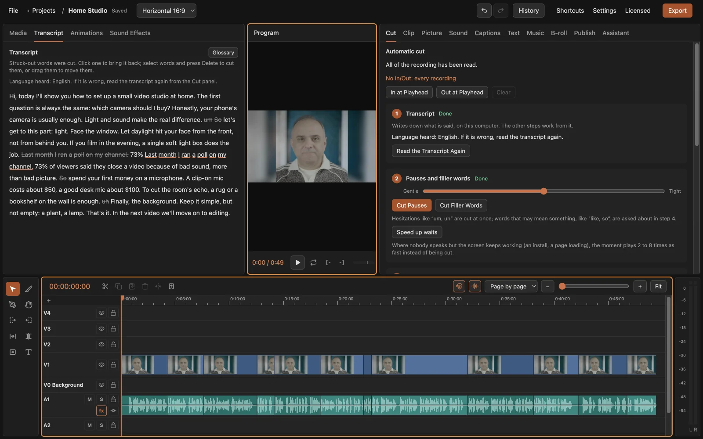
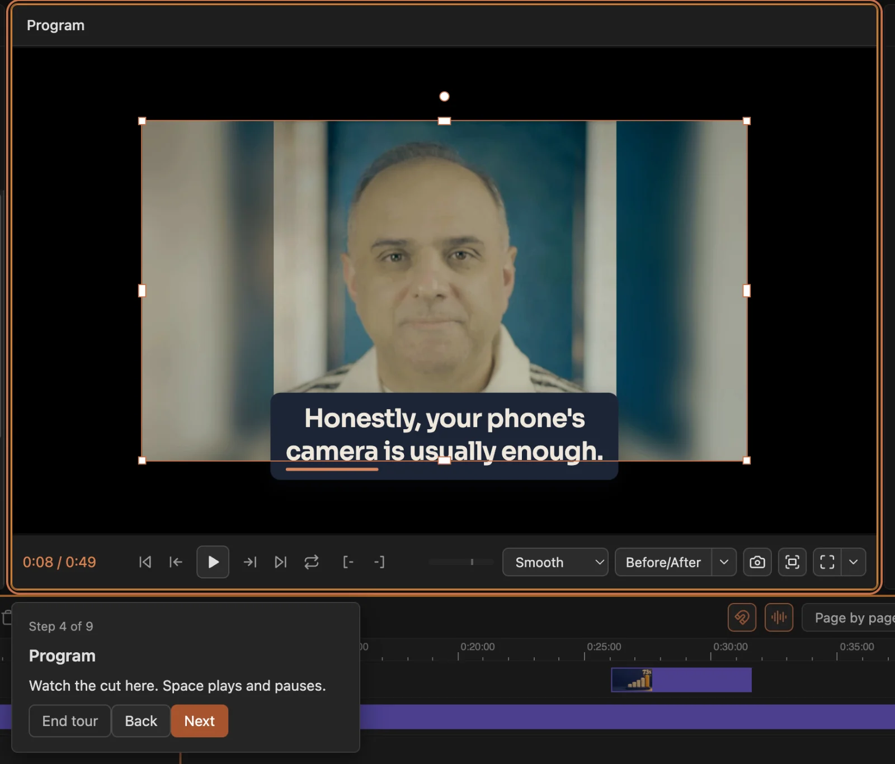

The editor window
The editor is one window in four parts: tabs at the left, the Program viewer in the middle, tabs at the right, and the timeline across the bottom.

The top bar
- File: new, open and save projects, export, record and more (Projects and files).
- Projects and the project's name, with Saved beside it: the project saves itself on every change.
- The frame shape, such as Horizontal 16:9.
- Undo and Redo, and History for every step and saved version.
- Shortcuts, Settings, and your licence: Trial: 14 days left or Licensed (Licence and trial).
- Export (Export).
The left tabs
- Media: your recordings, shots, sounds and sequences.
- Transcript: what was said, word by word. Delete a word and it is cut from the video (Transcript).
- Animations: make an animation for a stretch, and the styles (Animations).
- Sound Effects: whooshes, pops and clicks to add at the playhead (Sound Effects).
The Program viewer
The cut as it plays. Space plays and pauses. Drag the picture to move it, its corners to resize it. Overlays, Before/After and full screen are in its bar (Program).
The right tabs
Ten tabs, in this order: Cut, Clip, Picture, Sound, Captions, Text, Music, B-roll, Publish and Assistant. When the panel is too narrow for all of them, the rest wait under More.
The timeline
Your tracks and clips in time, with the tools on its left edge and the sound meter at its right (Timeline).
Move tabs and save a layout
Right-click a tab to move it: Move to Right Panel, Move to Left Panel, Move Tab Earlier, Move Tab Later. Reset Tab Order puts them back. Drag the borders between the parts to resize them.
In Settings › General:
- The program you are used to lays the panels out and sets the keys as Premiere Pro, Final Cut Pro, DaVinci Resolve or CapCut has them.
- Panel layout keeps your Workspaces: Save Layout… keeps where the panels sit, which tab is where and their sizes; Reset Layout returns the workspace in use to how it was saved.

The tour
Take the Tour, in the welcome window and the Start Window, walks you through the main panels in nine short steps. Press Esc to end it at any time. It is in Settings › General › Tour too, with Open Sample Project if you have no recording at hand.
